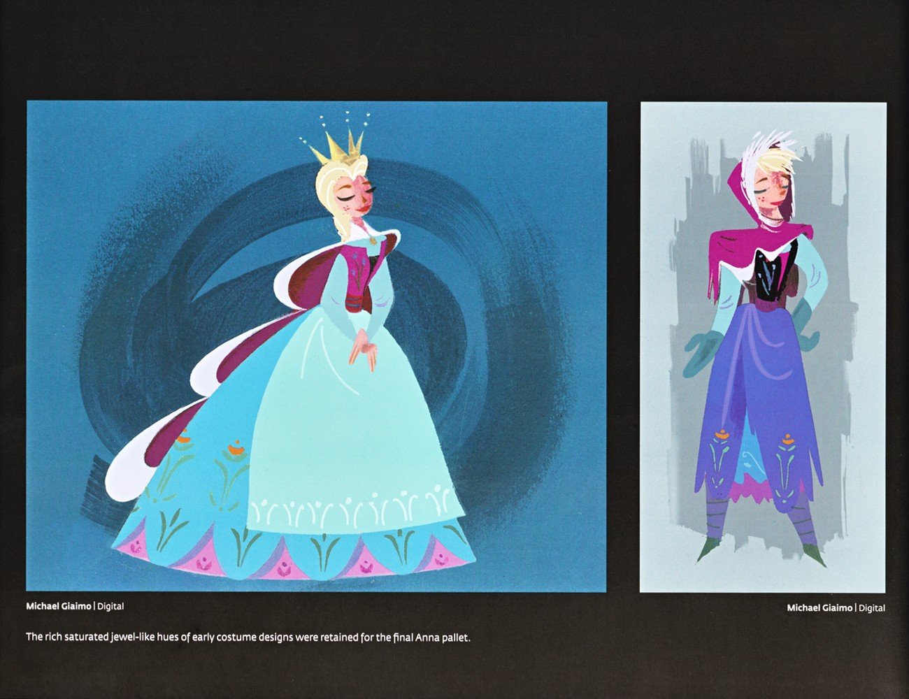
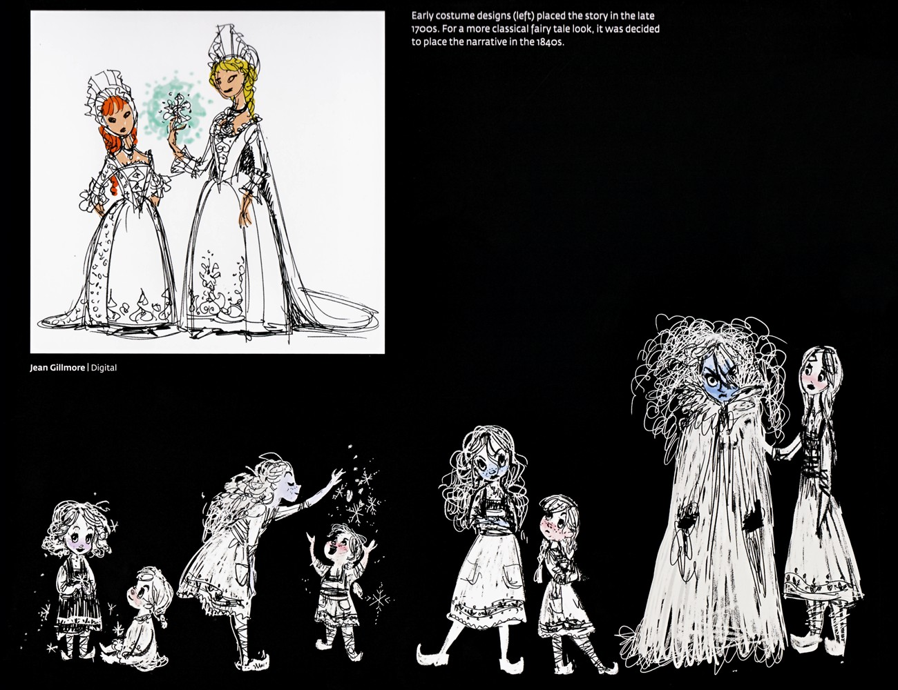

📖 设定集 · F1设定集
F1 图版 · 角色设定
F1 官方设定集图版 · p049–p067
5
本卷页数
🎨
设定集
中/英
双语
🖼️ F1 官方设定集 · 原书图版
F1 图版 · 角色设定
《The Art of Frozen》（Charles Solomon, Chronicle Books 2013） p049–p067
3
图版
p049–p067
原书页码
原书
扫描原图
笔记
逐页图注
👥 角色设定章节的剩余页：安娜、艾莎、汉斯与威塞尔顿公爵的设计稿、转身图与创作访谈——多数角色开篇页已在角色卷接入，这里是查漏补缺的原书档案。
👥 角色章节剩余页（p049–p067）

Elsa 与 Anna 服装油画
Michael Giaimo 以油画感呈现两身定稿服装：左侧冰蓝女王裙配王冠与粉披风、旋绕蓝背景的 Elsa；右侧灰背景下松散笔触的旅行装 Anna。文字说明早期服装设计中浓郁饱和的宝石色被保留到最终 Anna 的色板中。（F1设定集原页）

早期概念与年代设定
Jean Gillmore 的早期墨线概念：顶部为身着 18 世纪风格繁复礼服的幼年 Anna 与 Elsa；左下为孩子们（含姐妹）雪中嬉戏；右下为角色群像，含一个巨大的披裹神秘形象与多位民间裙装女性。文字说明早期服装将故事置于 18 世纪末，后为更经典的童话感而改定于 1840 年代。（F1设定集原页）

服装设计
艾莎披风上的花纹与安娜、汉斯、克斯托夫衣服上的 rosemaling 民间彩绘，在传统手绘动画中几乎是噩梦——细节量会拖垮预算，且要让图案不错位地"贴"在角色身上堪比《101忠狗》的点点管理；CG 在技术上容易，但需要精心规划。Victoria Ying 表示需把复杂 rosemaling 转化为更图形化、卡通化又保留（F1设定集原页）
💡 图注说明
本页全部图版为《The Art of Frozen》（Charles Solomon, Chronicle Books 2013）原书扫描（原图复制，未压缩），图注（中文标题 + 要点首句）逐页取自官方设定集中文笔记，点击图片可查看原尺寸扫描。
📌 本页要点
你正在阅读《设定集》卷的「F1 图版 · 角色设定」。本页由电影正典、官方设定集与官方小说综合梳理，可作为该主题的速查入口；右侧目录可快速跳转到本页各小节。